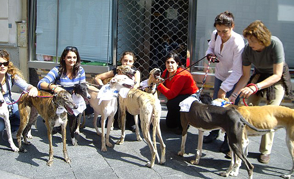

Está compuesto por voluntarios que comparten el respeto por la vida de los animales y los consideran sus iguales siendo que estos tienen capacidad para sentir placer, alegría, dolor y sufrimiento.
Somos una organización sin fines de lucro liderada por un grupo de voluntarios que buscan superar la situación de sobrepoblación, abandono, crueldad e indiferencia que viven millones de animales en nuestro país. (Buenos Aires/ Argentina). Propiciamos una actitud de respeto hacia todas las especies, entendiendo que no son “cosas” para ser utilizadas por el ser humano. Rechazamos todo tipo de explotación animal, incluyendo su uso como vestimenta, comida, entretenimiento y experimentación.
luchar contra el abandono, el maltrato y el sufrimiento animal. Educar sobre el respeto por la vida de los animales a través de charlas y talleres educativos en lugares públicos y privados. Organizar campañas de castración gratuitas y/o a bajo costo en las zonas vulnerables donde el Estado está ausente y los perros y gatos se reproducen sin control. Concientizar sobre la importancia de las castraciones masivas, gratuitas, sistemáticas y extensivas como único método ético de control de la superpoblación animal y exigir al Estado que cumpla con la normativa vigente. Asistir a animales en situación de riesgo de muerte, brindarles la atención médica necesaria para recuperarlos y encontrar familias responsables para su adopción. Asesorar a la población respecto a cómo actuar en casos de maltrato animal
La acción directa: asistir a animales abandonados en situación de riesgo, promoviendo su adopción y tenencia por parte de hogares responsables que estén en condiciones de brindarles albergue, atención y afecto. La acción preventiva: fomentar entre el público general la necesidad y la importancia de castrar machos y esterilizar las hembras antes del primer celo y exigiendo a las autoridades la aplicación de las leyes que los obligan a realizar campañas de castración masivas, gratuitas, extendidas, sistemáticas y permanentes, como único medio humanitario, sustentable y no eutanásico de control de la superpoblación animal. Las acciones en el plano legislativo y judicial: exigir la aplicación de la ley 14.346 de protección animal y denunciar ante las autoridades todo acto de maltrato y crueldad; presentar y apoyar proyectos de ley que beneficien a los animales. Las actividades educativas: desarrollar actividades educativas sobre trato ético hacia los animales. Las actividades asistenciales: rescatar animales en situación de riesgo con el fin de recuperarlos y darles la posibilidad de formar parte de una familia que le brinde lo que necesita. Las actividades solidarias: ecrear lazos de colaboración entre entidades y empresas comprometidos en la problemática animal.